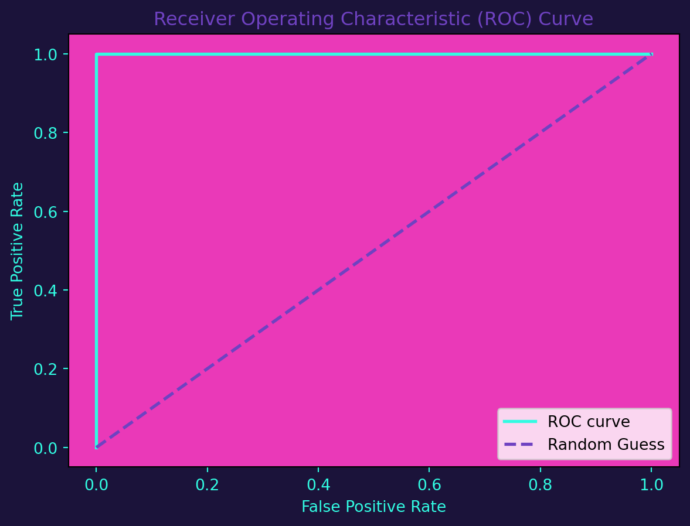
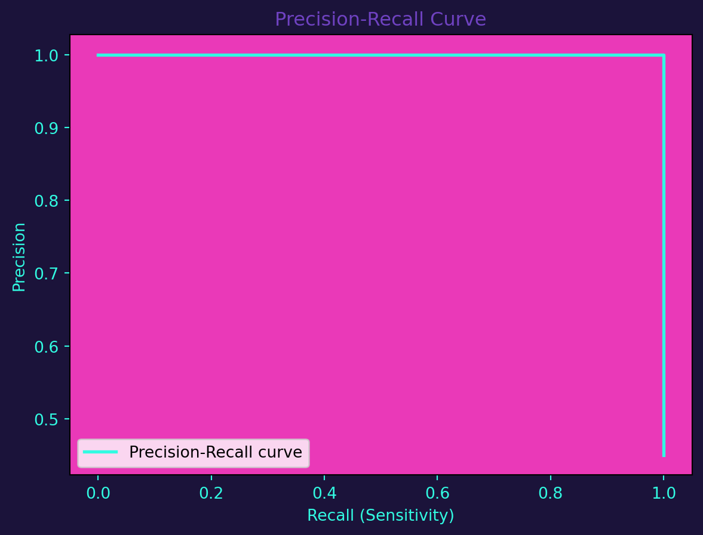
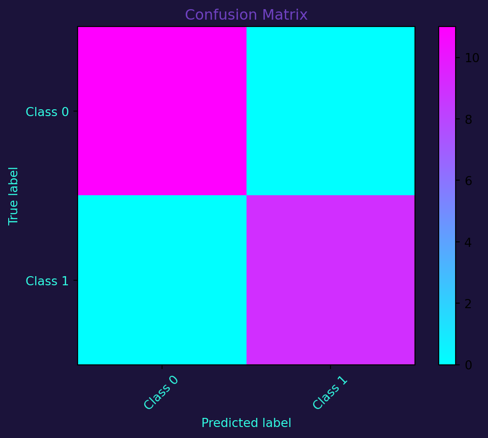

import numpy as np
from sklearn.model_selection import train_test_split
from sklearn.linear_model import LogisticRegression
from sklearn.metrics import roc_curve, roc_auc_score, precision_recall_curve
# Generate synthetic classification data
np.random.seed(42)
X = np.random.rand(100, 1)
y = (X > 0.5).astype(int).flatten()
# Split the data into training and testing sets
X_train, X_test, y_train, y_test = train_test_split(X, y, test_size=0.2, random_state=42)
# Train a logistic regression model
logreg = LogisticRegression()
logreg.fit(X_train, y_train)
# Predict probabilities on the test set
y_proba = logreg.predict_proba(X_test)[:, 1]Introduction
Classification, a cornerstone of machine learning, empowers systems to make informed decisions based on input features. From determining whether an email is spam to diagnosing diseases, classification algorithms play a pivotal role in automating decision-making processes.
Types of Classification Algorithms
There are several classification algorithms, each suited to different types of problems:
Logistic Regression: Ideal for binary classification tasks.
Decision Trees: Effective for both binary and multiclass classification.
Support Vector Machines (SVM): Robust for linear and nonlinear classification.
Let’s implement a simple classification model using logistic regression in Python:
Data Visualization
I use the following colors in all of my blogs data visualizations
# Define specific colors (same as CSS from quarto vapor theme)
background = '#1b133a'
pink = '#ea39b8'
purple = '#6f42c1'
blue = '#32fbe2'Receiver Operating Characteristic (ROC) Curve
ROC curves visualize the trade-off between true positive rate (sensitivity) and false positive rate. The area under the ROC curve (AUC-ROC) is a valuable metric for model performance.
import matplotlib.pyplot as plt
# Visualize the ROC curve
fpr, tpr, _ = roc_curve(y_test, y_proba)
fig, ax = plt.subplots()
ax.plot(fpr, tpr, color=blue, lw=2, label='ROC curve')
ax.plot([0, 1], [0, 1], color=purple, lw=2, linestyle='--', label='Random Guess')
ax.set_xlabel('False Positive Rate', color=blue)
ax.set_ylabel('True Positive Rate', color=blue)
ax.set_title('Receiver Operating Characteristic (ROC) Curve', color=purple)
ax.legend(loc='lower right')
ax.tick_params(axis='x', colors=blue)
ax.tick_params(axis='y', colors=blue)
ax.set_facecolor(pink)
fig.set_facecolor(background)
plt.show()
Precision-Recall (PR) Curve
PR curves focus on the trade-off between precision and recall, particularly valuable in imbalanced datasets.
# Visualize the Precision-Recall curve
precision, recall, _ = precision_recall_curve(y_test, y_proba)
fig, ax = plt.subplots()
ax.plot(recall, precision, color=blue, lw=2, label='Precision-Recall curve')
ax.set_xlabel('Recall (Sensitivity)', color=blue)
ax.set_ylabel('Precision', color=blue)
ax.set_title('Precision-Recall Curve', color=purple)
ax.legend(loc='lower left')
ax.tick_params(axis='x', colors=blue)
ax.tick_params(axis='y', colors=blue)
ax.set_facecolor(pink)
fig.set_facecolor(background)
plt.show()
Confusion Matrix
The confusion matrix provides a detailed understanding of a classification model’s performance, breaking down predictions into true positives, true negatives, false positives, and false negatives.
from sklearn.metrics import confusion_matrix
# Generate predictions
y_pred = logreg.predict(X_test)
# Calculate confusion matrix
cm = confusion_matrix(y_test, y_pred)
# Visualize the confusion matrix
fig, ax = plt.subplots()
cax = ax.imshow(cm, interpolation='nearest', cmap=plt.cm.cool)
ax.set_title('Confusion Matrix', color=purple)
plt.colorbar(cax)
classes = ['Class 0', 'Class 1']
tick_marks = np.arange(len(classes))
ax.set_xticks(tick_marks)
ax.set_yticks(tick_marks)
ax.set_xticklabels(classes, rotation=45, color=blue)
ax.set_yticklabels(classes, color=blue)
ax.set_xlabel('Predicted label', color=blue)
ax.set_ylabel('True label', color=blue)
fig.set_facecolor(background)
plt.show()
In conclusion, classification in machine learning is a powerful tool for automating decision-making processes. By implementing and evaluating classification models, we gain insights into their performance through metrics like ROC curves, PR curves, and confusion matrices. These visualizations provide a nuanced understanding of a model’s strengths and weaknesses, facilitating informed decision-making in real-world applications.